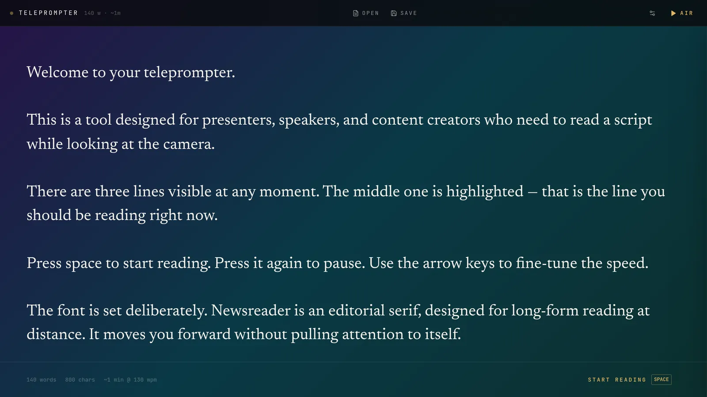
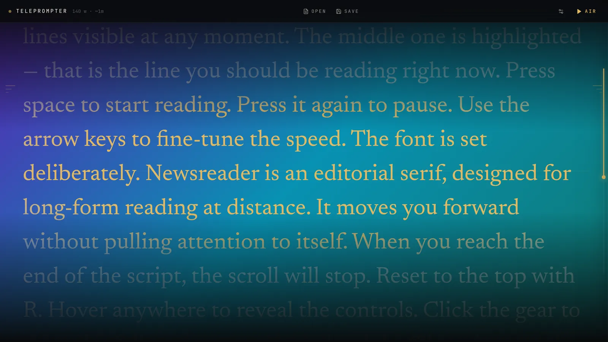
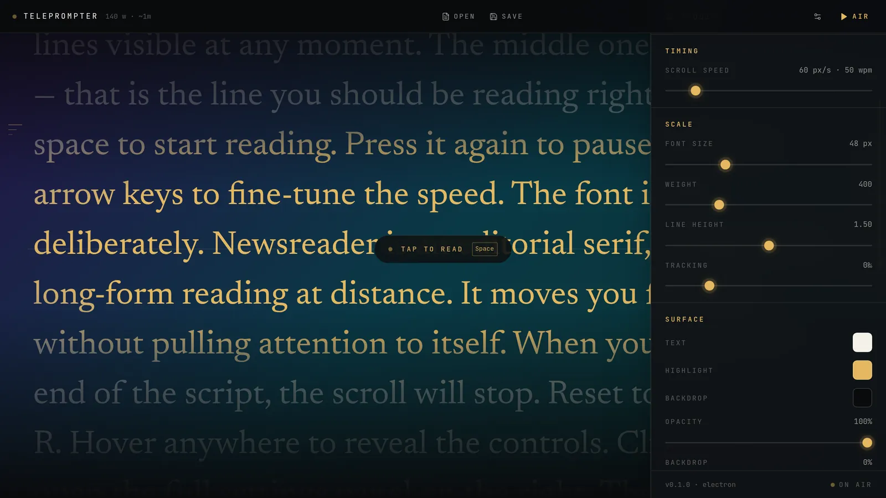

One line in focus
The line you should be reading glows in amber at the center. Everything else fades back, so your eyes never hunt.
A quiet, focused teleprompter for your desktop. Smooth scroll, one highlighted line to follow, and a window that floats over everything else.
Designed around one idea: you should always know exactly which line to read next — without anyone noticing you're reading.
The line you should be reading glows in amber at the center. Everything else fades back, so your eyes never hunt.
Continuous motion, not line-by-line jumps. Nudge the speed with the arrow keys while you talk.
Transparent, frameless, always on top — at three levels. Park it over your deck or right under the webcam.
Let the mouse pass straight through to the app underneath, or flip the text for a beam-splitter rig.
Speed, size, weight, line height, tracking, text and highlight colour, backdrop and opacity — remembered next launch.
Speak your script into the editor in Spanish or English. Recognition runs on your machine — no cloud, no account.
Open a .txt or .md, or start fresh. Word count and reading time update as you type, and Ctrl S saves right back to the file. Markdown renders formatted when you read: headings, bold, lists and quotes.

Newsreader, an editorial serif built for reading at distance, moves you forward without drawing attention to itself. A glowing rail on the right shows how far along you are.

Press H for the studio panel. Change speed, scale and surface on the fly — every setting, plus the window's size and position, is there when you come back.

Press Ctrl D in the editor and talk. Words appear at the cursor as a live preview and settle in when you pause.
Global shortcuts work even when another app has focus.
No account, no telemetry, no subscription. MIT licensed.
Linux: make the AppImage executable with chmod +x Teleprompter-*.AppImage, then run it, or install the .deb with sudo apt install ./Teleprompter-0.1.1-linux-amd64.deb.
macOS & Windows: the installers aren't code-signed yet. On macOS, right-click the app in Applications and choose Open the first time (if it says the app is damaged, run xattr -cr /Applications/Teleprompter.app). On Windows, if SmartScreen warns you, choose More info → Run anyway.
All versions and source code are on GitHub.